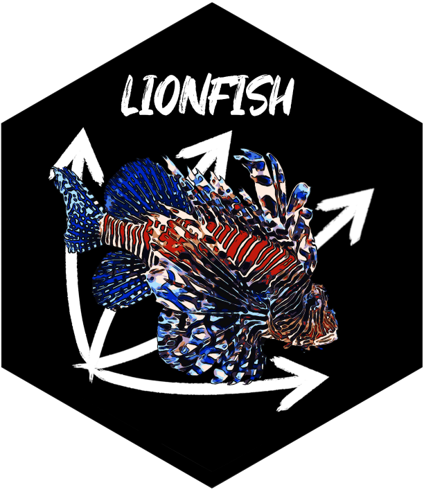

Initialize Environment for 'python' Backend
init_env.RdInitializes the 'python' backend required for the functionality of lionfish. At first it searches whether a 'python' environment with the provided name exists or not. If it does, it will be loaded and the 'python' function 'check_backend' is run to check if it works properly. If no 'python' environment with the provided name exists, it will be installed and then loaded. This can either be done with or without Anaconda as package manager. Anaconda can be more robust, but the GUI will appear dated. Thus, trying 'init_env' with virtual_env = "virtual_env" out first is recommended. For 'Windows' users, the path to the tk and tcl libraries will be set, otherwise tkinter cannot run.
Arguments
- env_name
a string that defines the name of the python environment reticulate uses. This can be useful if one wants to use a preinstalled python environment.
- virtual_env
either "virtual_env" or "anaconda". "virtual_env" creates a virtual environment, which has the advantage that the GUI looks much nicer and no previous python installation is required,but the setup of the environment can be more error prone. "anaconda" installs the python environment via Anaconda, which can be more stable, but the GUI looks more dated.
- local
logical
Examples
if (check_venv()){
init_env(env_name = "r-lionfish", virtual_env = "virtual_env")
} else if (check_conda_env()){
init_env(env_name = "r-lionfish", virtual_env = "anaconda")
}